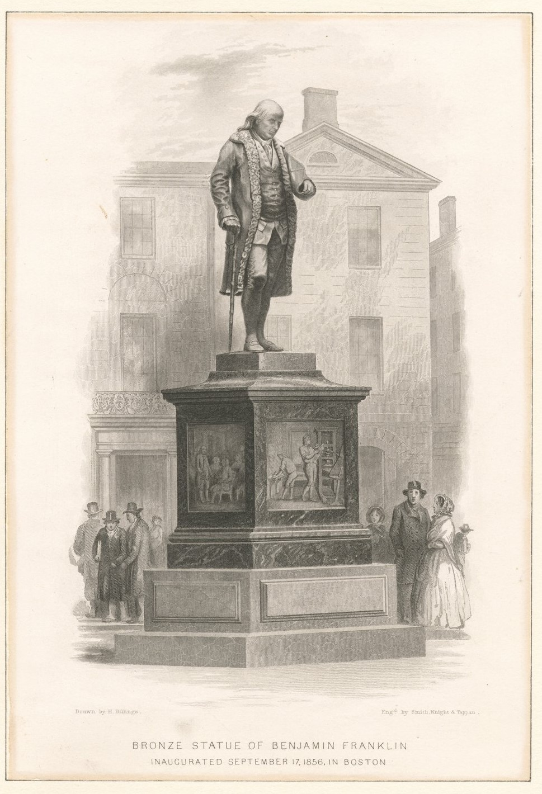

El Legado de Benjamin Franklin
Huella Eterna en la Historia
El impacto político y filosófico de Benjamín Franklin constituye uno de los pilares estructurales en la fundación de la civilización occidental moderna. Su trascendencia histórica radica en una hazaña documental inigualable: es el único de los Padres Fundadores que participó activamente en la redacción y plasmó su firma en los cuatro manuscritos jurídicos fundamentales que consolidaron el nacimiento de los Estados Unidos de América. Entre estos textos se encuentran la emblemática Declaración de Independencia en 1776, el crucial Tratado de Alianza con Francia en 1778, el Tratado de París de 1783 (que puso fin oficial a la guerra contra Gran Bretaña) y la Constitución de los Estados Unidos en 1787. Su aguda capacidad intelectual y sus misiones diplomáticas aseguraron el reconocimiento internacional de la nueva república.

Más allá de sus logros en el siglo XVIII, la presencia simbólica de Franklin se mantiene plenamente vigente en la cultura económica global a través de su inmortalización en el billete de 100 dólares de la Reserva Federal. Este reconocimiento monetario, instaurado de manera regular desde 1914, representa un honor excepcional: Franklin es uno de los poquísimos personajes históricos que aparece en el papel moneda nacional sin haber ocupado jamás el cargo de presidente de la nación. El gobierno estadounidense seleccionó su retrato no solo por su astucia financiera y su gestión en la unificación del primer sistema postal del país, sino como un homenaje permanente a sus célebres máximas sobre el valor del esfuerzo, el ahorro responsable, el desarrollo de las ciencias y el pragmatismo educativo.